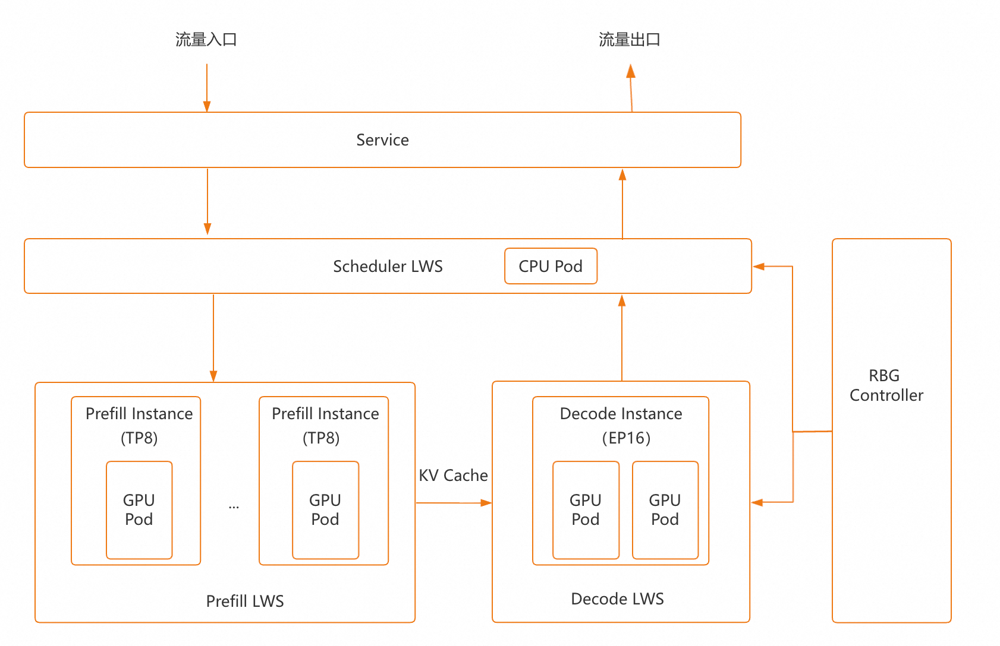
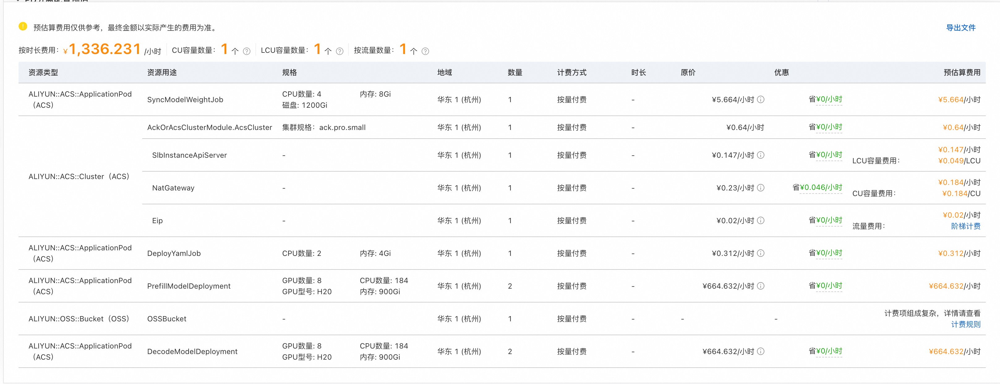
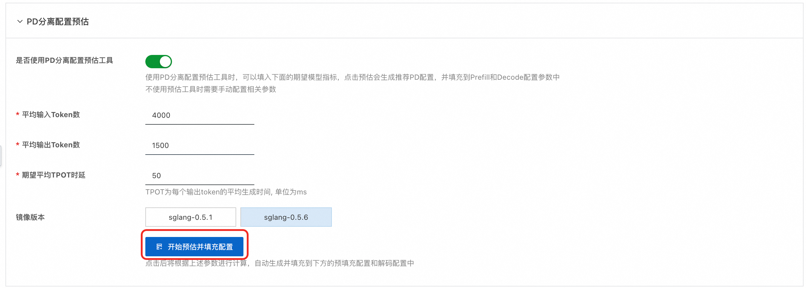
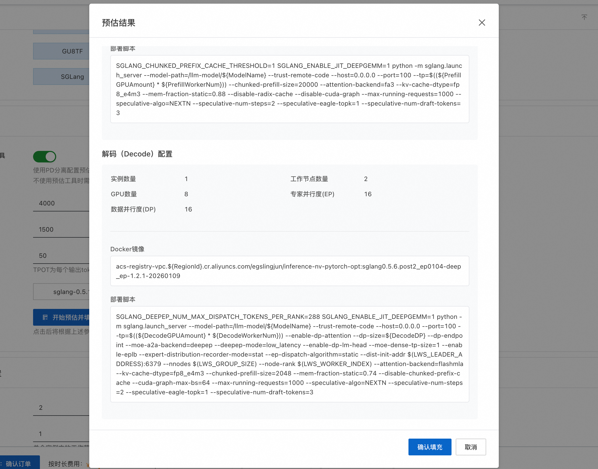
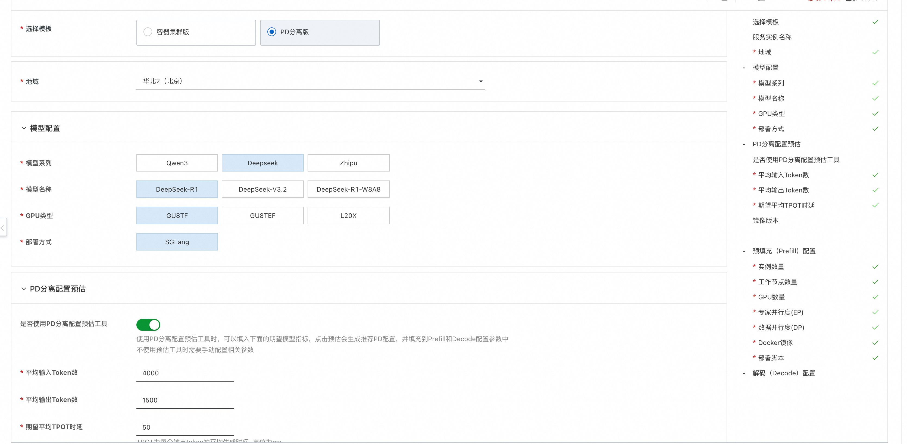
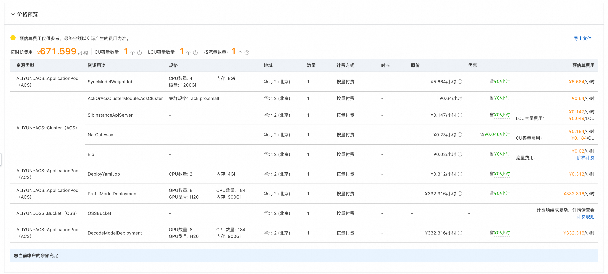

基于容器集群的PD分离部署方案
方案说明
本方案为计算巢联合ACS性能优化团队推出，为大语言模型（LLM）提供了开箱即用的 PD 分离部署方案，无需手动配置复杂的基础设施即可实现生产级别的高性能推理服务。本方案基于阿里云容器计算服务 ACS集群，采用 PD 分离（Prefill-Decode 分离）架构和专家并行（Expert Parallelism）优化，为 MoE（Mixture of Experts）架构的大模型提供极致性能体验。
当前支持Qwen、Deepseek、GLM等系列满配模型的快速部署。
整体架构

PD 分离的部署架构整体分为调度层和推理层两部分：
- 调度层：由 Scheduler（LWS）承担，外部流量经 Service 路由至此，由调度器将请求分发到推理层。
- 推理层：拆分为 Prefill 和 Decode 两个阶段。Prefill 负责并行处理输入 Token，完成后将中间结果（KV Cache）传递给 Decode 进行逐 Token 的自回归生成。
这种分离架构的核心优势在于：Prefill 阶段属于计算密集型任务，而 Decode 阶段为访存密集型的自回归过程，对显存容量要求较高。将两者解耦后可以独立扩缩容，典型配置为 2P1D（2 个 Prefill 实例 + 1 个 Decode 实例），Decode 侧通过多卡（如 16 张 GPU）张量并行来扩展可用显存，从而支撑超大规模模型的高效推理。
计费说明
计算巢服务本身是免费的，客户只用为部署过程中使用到的资源付费，具体费用在费用预估时可以看到。
ACS集群是Serverless的计费方式，其中部署的Pod都是按使用量和使用时间来计费，对应的费用预估如下所示：

ACS集群部署场景下模型服务部署过程中主要包括以下两块的费用：
- 模型服务运行长期使用的资源费用。
- 模型运行Pod相关费用，如上图中资源类型为ALIYUN::ACS::ApplicationPod，资源用途为PrefillModelDeployment和DecodeModelDeployment的资源，这部分包括Gpu、Cpu核数、内存的费用，具体取决于使用数量。
- OSS Bucket的存储费用。
-
ACS集群相关控制面和集群管控中用到的SLB、NATGateway、EIP费用。
-
模型服务部署时产生的一次性费用，ACS计费可参见计费说明。
- 模型权重同步时Job产生的费用，如上图中资源类型为ALIYUN::ACS::ApplicationPod，资源用途为SyncModelWeightJob的资源，对应Pod Cpu核数、内存和挂载磁盘的费用。这里需要注意的是，模型权重同步为一次性费用，后续重复部署可以选择已有Bucket，然后跳过模型权重同步的过程。
- 服务部署时Job产生的费用，如上图中资源类型为ALIYUN::ACS::ApplicationPod，资源用途为DeployYamlJob的资源，对应Pod Cpu核数、内存的费用。
RAM账号所需权限
Ram账号所需的权限见官网文档中部署权限部分。
PD分离配置预估
本方案提供了 PD 分离配置预估工具，帮助您根据业务负载快速确定 Prefill 与 Decode 的节点数量及资源配置。使用方式如下：
-
在「PD 分离配置预估」区域输入平均输入 Token 数、平均输出 Token 数和期望平均 TPOT 时延，然后点击开始预估并填充配置按钮。

-
系统将在弹窗中给出推荐的 Prefill 和 Decode 节点配置（包括节点数量、GPU 规格等）。确认无误后点击确认填充，相关参数会自动回填至下方的 Prefill 配置和 Decode 配置表单中。

部署流程
-
单击部署链接 。根据界面提示填写参数，可以看到对应询价明细，确认参数后点击下一步：确认订单。

-
点击下一步：确认订单后可以也看到价格预览，随后点击立即部署，等待部署完成。

-
等待部署完成后就可以开始使用服务，进入服务实例详情查看如何私网访问指导。如果选择了支持公网访问，则能看到公网访问指导。

使用说明
私网API访问
- 在和服务器同一VPC内的ECS中访问概览页的私网API地址。访问示例如下：
# 私网有认证请求，流式访问，若想关闭流式访问，删除stream即可。
curl http://{$PrivateIP}:8000/v1/chat/completions \
-H "Content-Type: application/json" \
-H "Authorization: Bearer ${API_KEY}" \
-d '{
"model": "ds",
"messages": [
{
"role": "user",
"content": "给闺女写一份来自未来2035的信，同时告诉她要好好学习科技，做科技的主人，推动科技，经济发展；她现在是3年级"
}
],
"max_tokens": 1024,
"temperature": 0,
"top_p": 0.9,
"seed": 10,
"stream": true
}'
公网API访问
- 如果想通过公网访问API地址，部署时如果选择了支持公网访问，则直接通过公网IP访问即可，示例如下：
curl http://${PublicIp}:8000/v1/chat/completions \
-H "Content-Type: application/json" \
-d '{
"model": "ds",
"messages": [
{
"role": "user",
"content": "给闺女写一份来自未来2035的信，同时告诉她要好好学习科技，做科技的主人，推动科技，经济发展；她现在是3年级"
}
],
"max_tokens": 1024,
"temperature": 0,
"top_p": 0.9,
"seed": 10,
"stream": true
}'